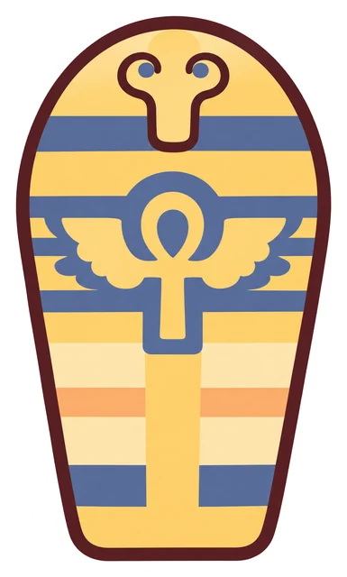

이 다섯 석관 중에 너랑 닮은 친구가 있어.몇 가지 물어보고 맞혀볼게!

요즘 공부할 때를 떠올려서, 가장 가까운 답을 골라줘
머해
네 결과가 준비됐어
정해 둔 앱을 열면 내가 고른 사진과 한마디,오늘 할 공부가 함께 떠.
예시 인물이야 · 실제 앱에선 내 사진을 넣어
머해는 앱을 막지 않고 한 번 잡아줘.계속 볼지, 돌아갈지는 네가 골라.
알겠다. 이 석관이야!